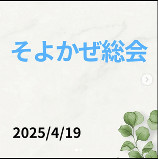

【報告】 2025年4月19日に
そよかぜ総会を行いました。

2025年4月19日にそよかぜ総会を行いました。 総会では2024年度のボランティア活動について取り組んだことを振り返りました。
2025年度につながるように、総会を通じて活動をよりよくするために今後の方針などについてまとめつつ、メンバー同士で話し合いなどをしました。
今後について
今後も地域の皆さまに寄り添いながら、 継続して活動を行ってまいります。

2025年4月19日にそよかぜ総会を行いました。 総会では2024年度のボランティア活動について取り組んだことを振り返りました。
2025年度につながるように、総会を通じて活動をよりよくするために今後の方針などについてまとめつつ、メンバー同士で話し合いなどをしました。
今後も地域の皆さまに寄り添いながら、 継続して活動を行ってまいります。